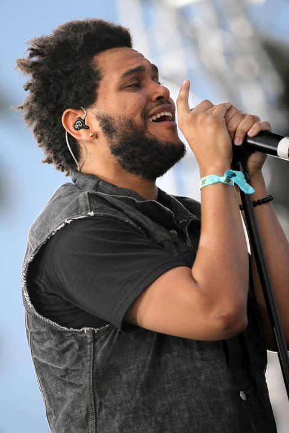
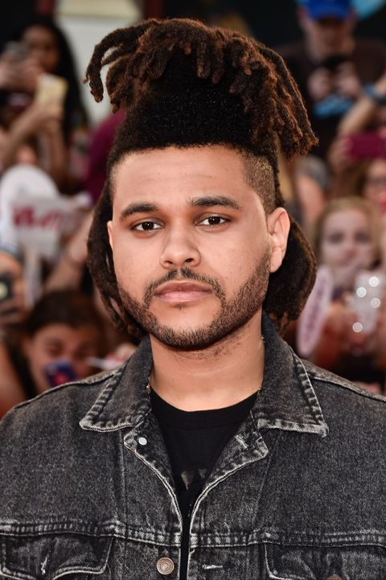
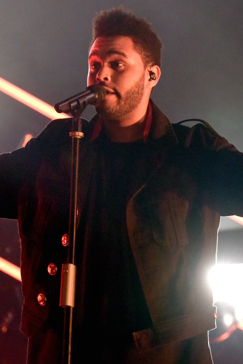
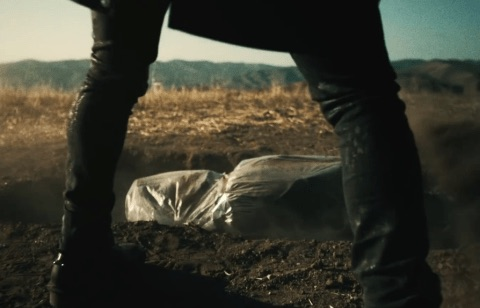
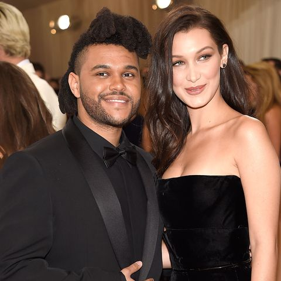
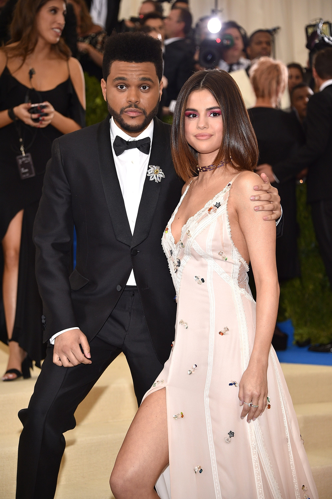

By the time Abel Tesfaye released Trilogy, his compilation album with remastered versions of his first three mixtapes, he had forged a connection with Drake, a fellow Toronto music star who had taken a liking to his musical style (often referred to as “alternative R&B” and ironically referred to as “PBR&B”). He lent his vocals and lyrics to tracks on Drake’s chart-topping album Take Care.
  As The Weeknd’s music began to bend genres with the release of his first three studio albums, his hairstyle reflected the change with its famous gradual transformation. Beginning with a square-cut hairline, short hair and a full beard, by the time his second studio album, Beauty Behind the Madness, released, it had morphed into what many referred to as “the pineapple”.
Around this time another pattern reflecting The Weeknd’s hops across genre began: a focus on death and rebirth in his music videos. Music videos such as Tell Your Friends and Starboy featured the singer literally killing another version of himself, showing his refusal to be pigeonholed into any single genre that audiences expected.
 Tesfaye also dated celebrities Bella Hadid and Selena Gomez, with his breakups with each paving the way for lyrical content in his future music.